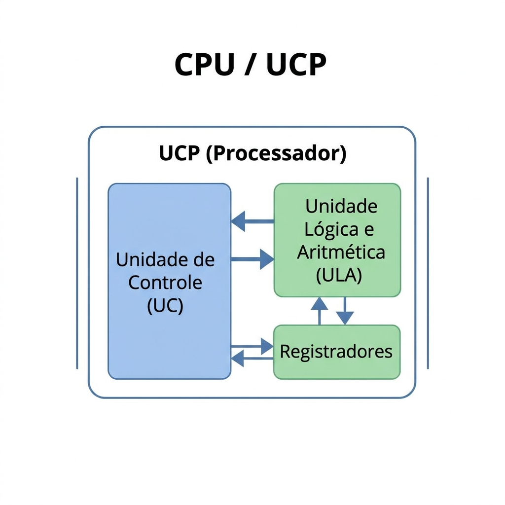
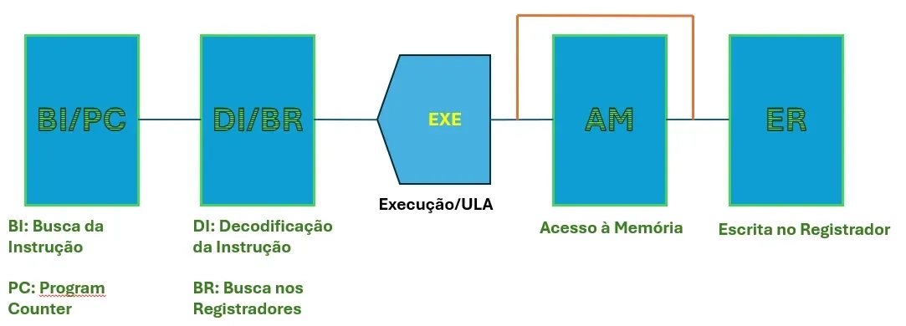
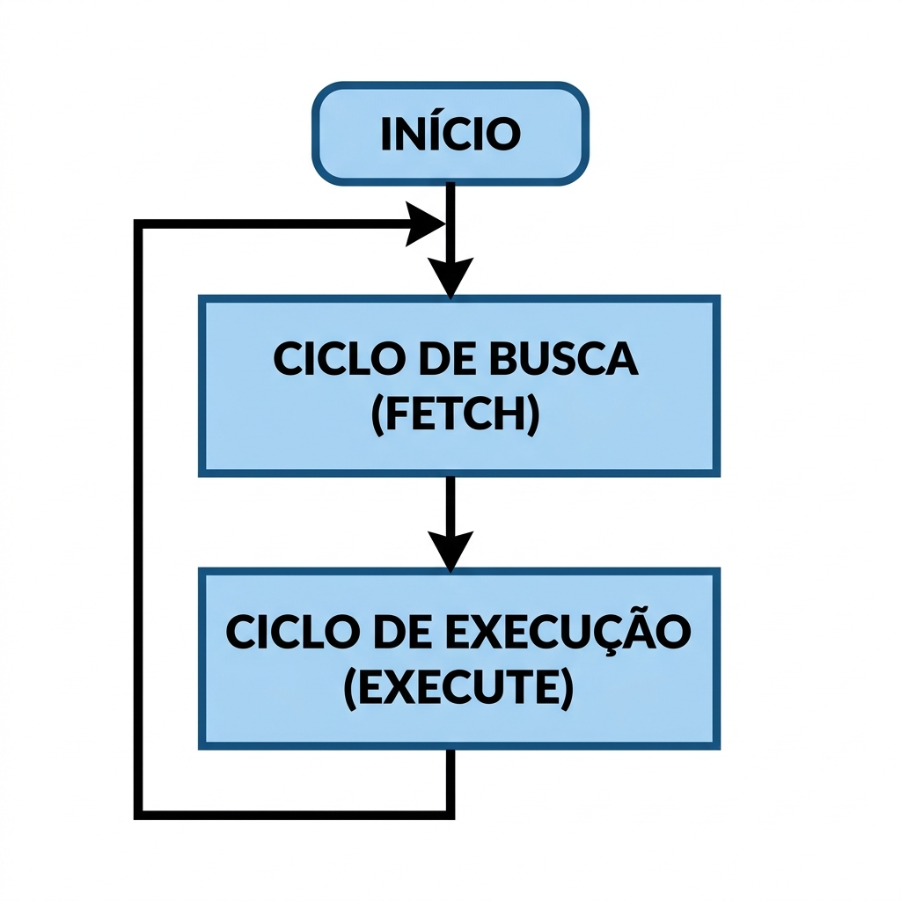
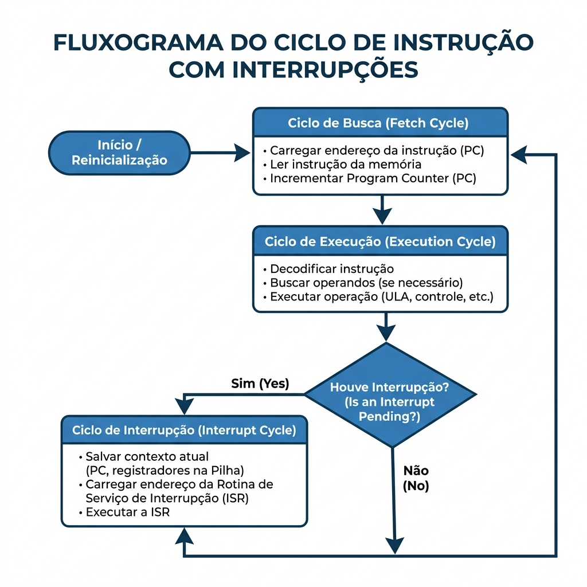

🖥️ Aula 05: Unidades de Processamento e Ciclo de Instrução
🎯 Objetivo da Aula
Ao final, o aluno deve:
- Identificar os componentes internos da Unidade Central de Processamento (UCP)
- Diferenciar registradores visíveis ao usuário de registradores de controle e estado
- Descrever o fluxo de dados durante o Ciclo de Busca (Fetch) e Execução (Execute)
- Compreender o papel das interrupções na quebra do fluxo normal de execução
- Relacionar a arquitetura de registradores com o desempenho do processador
Base conceitual alinhada com:
- William Stallings, Arquitetura e Organização de Computadores, 11ª ed., Cap. 12 (“Estrutura e Função do Processador”) e Cap. 3 (“Visão de Alto Nível: Função e Interconexão do Computador”).
0️⃣ Revisão da Aula Anterior: 5 Perguntas sobre Arquiteturas CISC vs RISC
Antes de avançar para o interior do processador, vamos revisar os conceitos da Aula 04:
| # | Pergunta | Conceito Avaliado |
|---|---|---|
| 1 | Qual a diferença fundamental entre as filosofias CISC e RISC em relação ao número e tamanho das instruções? | Características Estruturais |
| 2 | O que é a técnica de Pipeline e qual a sua maior vantagem? | Desempenho / Pipeline |
| 3 | Por que os processadores RISC (como o ARM) dominam o mercado de dispositivos móveis (smartphones) e IoT? | Eficiência Energética |
| 4 | Como a Intel/AMD aplicaram o conceito de convergência arquitetural nos processadores modernos (ex: Core i7)? | Convergência (CISC por fora, RISC por dentro) |
| 5 | O que significa CPI (Ciclos por Instrução) e qual arquitetura (CISC ou RISC) busca aproximar esse valor de 1? | Medidas de Desempenho |
Respostas rápidas para discussão em sala:
1️⃣ Recapitulação: De Onde Viemos?
🔗 Conexão com a Aula 04
Na aula anterior, entendemos o Conjunto de Instruções (ISA) como o “idioma” do processador, onde discutimos as duas filosofias principais (CISC e RISC) e como as instruções fluem através do Pipeline.
Mensagem-chave: Já sabemos o que o processador pode fazer (suas instruções). Hoje vamos abrir a “caixa preta” da CPU para entender como ele faz. Vamos analisar as engrenagens internas e o ritmo contínuo que mantém o computador funcionando: o Ciclo de Instrução.
2️⃣ A Unidade Central de Processamento (UCP)
📋 2.1 Definição
A UCP (ou CPU) é o componente lógico central encarregado de buscar, decodificar e executar as instruções armazenadas na memória principal.
Stallings (Cap. 12): descreve que para executar instruções, o processador deve ter memória de curto prazo acoplada a ele, os registradores, além de sistemas para cálculos lógicos e tomada de decisão eletrônica.
🧩 2.2 Componentes Internos
| Componente | Detalhe Funcional |
|---|---|
| Unidade Lógica e Aritmética (ULA) | Realiza cálculos (somas, subtrações) e operações booleanas (AND, OR, NOT). |
| Unidade de Controle (UC) | Interpreta a instrução e envia os sinais elétricos necessários para ativar a ULA e caminhos de dados. |
| Registradores | Memória ultra-rápida interna (nível zero na hierarquia). Armazenam dados imediatos e estados da CPU. |
| Barramentos Internos | Caminhos elétricos que conectam a ULA, UC e Registradores dentro do próprio chip. |

Diagrama bloco ULA, Unidade de Controle, Registradores conectando-se internamente em uma UCP genérica.
💡 2.3 Analogia
A CPU é como um chef de cozinha em ação. A ULA é a faca e as panelas (quem faz efetivamente o trabalho de transformação). A Unidade de Controle é a mente do chef, lendo um livro de receitas e comandando os movimentos do corpo. Os Registradores são os pratos e as tigelas mantidas na bancada imediata onde os ingredientes (dados) ficam temporariamente guardados durante o choque térmico ou corte.
3️⃣ A Unidade de Processamento: Registradores
🔧 3.1 Definição
Os processadores dividem os registradores em categorias lógicas. Nem todo registrador pode ser alterado deliberadamente pelo software. Eles se dividem em Visíveis ao Usuário e Registradores de Controle e Estado.
🧩 3.2 Registradores Críticos de Controle e Estado
Estes são essenciais para o ciclo mecânico repetitivo da CPU:
| Registrador | Nome Completo | Função Crítica |
|---|---|---|
| PC | Program Counter | Armazena o endereço da próxima instrução a ser buscada na memória. |
| IR | Instruction Register | Armazena a instrução atual que acabou de ser buscada e está sendo decodificada/executada. |
| MAR | Memory Address Register | Especifica o endereço na memória principal onde será feita uma leitura ou escrita. |
| MBR | Memory Buffer Register | Contém o genérico dado lógico (ou instrução lida) que veio da memória ou que irá para lá. |
| PSW | Program Status Word | Guarda flags de estado de sistema (ex: se a última soma deu zero, deu overflow, foi negativa). |

Sequência de Busca usando registradores. A ilustração exibe o PC apontando para o MAR, depois comunicando com a Memória e retornando o resultado pelo MBR até chegar no IR.
4️⃣ O Ciclo de Instrução Básico
⚡ 4.1 Definição
A função básica do computador é executar programas, e um programa consiste em uma sequência sequencial de instruções contidas em endereços na memória. O processo ordenado para engolir e processar uma única instrução é nomeado Ciclo de Instrução.
Stallings (Cap. 3): define que na forma arquitetônica mais simples imaginável, o processamento de uma instrução possui dois subciclos primordiais intercalados: Ciclo de Busca (Fetch) e Ciclo de Execução (Execute).
🧩 4.2 O Fluxo Básico de Estados
| Estado | O que Ocorre em Hardware |
|---|---|
| Busca (Fetch) | O processador lê a próxima estrutura codificada da memória e manda para o IR, avançando o PC. |
| Decodificação | A UC descobre o que a instrução faz (identificando seu Opcode interno). |
| Execução (Execute) | O hardware realiza a ação: soma de componentes, movimento mestre de dados ou salto. |
| Múltiplos Ciclos | Este macro-ciclo é contínuo e obedece ao ritmo biológico do relógio do sistema (Frequência do Clock). |

Flowchart cíclico (Início → Ciclo de Busca (Fetch) → Ciclo de Execução (Execute) → loop infinito).
📝 4.3 O Passo a Passo Físico da Busca (Fetch)
Quando o micro-estágio de Busca começa, ocorre um “balé” coordenado de pulsos elétricos:
- O Hardware envia o endereço do PC para o MAR e sinaliza pelo barramento que solicita uma leitura.
- A memória principal decodifica a requisição e devolve o valor de bits, abrigando-o no MBR.
- Como a unidade central sabe que está num momento de busca da instrução ativa, ela copia o conteúdo ilhado no MBR para o IR.
- O valor do PC é incrementado localmente para apontar para a instrução vizinha e sucessora no espaço da memória.
💡 4.4 Analogia
O funcionamento contínuo assemelha-se a seguir um longo roteiro teatral. O PC é o dedo apontador do diretor marcando duramente qual linha exata de texto (endereço) será lida a seguir. O IR é o cérebro interpretativo do ator. Após ler e meditar (Busca/Fetch), o ator exibe a ação no palco material (Execução). E o dedo impiedoso (PC) logo move para a próxima frase após a verificação.
5️⃣ O Fim do Ciclo: Interrupções Mestre
🔀 5.1 O Que São Interrupções Sistêmicas?
A sequência normal infalível iterando Busca → Execução assume um pressuposto estático perigoso: as coisas vivem no vácuo e são perfeitamente lineares. Quase todos os computadores viáveis suportam Interrupções: mecanismos arquitetados onde módulos autônomos adjacentes (como HD, placa de rede, ou falhas na memória) tem passe-livre para interromper a sequência de processamento e roubar a atenção para eles.
🧩 5.2 Fluxo Estruturado do Ciclo com Interrupções
| Etapa | Detalhe Relevante |
|---|---|
| Janela Fim-de-Execução | Exatamente logo após completar uma execução, o hardware inspeciona um fio sinalizador sensível verificando se alguém pede atenção de emergência. |
| Preservação de Contexto | Havendo interrupção atestada, a CPU freia a busca seguinte. O registrador PC vigente e PSW crítico são fisicamente guardados na memória para não os perder. |
| Rotina de Tratamento (ISR) | O ponteiro PC agora adquire o novíssimo endereço da Rotina de Tratamento de Interrupção específica do sistema operacional hospedado. |
| Retorno Conclusivo | Encerrada a emergência do driver ou software corretor, os valores exatos de PC e PSW são repostos pela ordem inversa e tudo parece um lapso sutil da perspectiva do software original que foi interrompido. |

Flowchart do Ciclo estendido com o estágio obrigatório de checagem. Apresenta o losango “Houve interrupção?“.
6️⃣ Tendências e Otimizações Contemporâneas
🚀 Previsão Sistêmica de Desvios (Branch Prediction)
O conceito basilar e histórico é o sequenciamento fixo do PC. Contudo, em hardwares moderníssimos baseados em processamento temporal esticado, quando um ciclo desagua em um salto variável (como estruturas “IF-ELSE”), o fluxo se confunde, paralisando etapas superescalares.
Atrelado às buscas do PC, arquiteturas com o sufixo “Core” intel ou “M” Apple portam hardware preditor incrustado altamente complexo calcado em tabelas de histórico lógico que tenta proativamente deduzir se um desvio no programa se realizará ou não muito antes dele fluir efetivamente pelas ULA, agilizando fluxos em milhões de microssegundos em massa.
7️⃣ Resumo Estrutural Consolidador
| Conceito Crítico | Definição Básica em uma só sentença |
|---|---|
| UCP / CPU Funcional | Estrato composto fundamental de ULA, UC e Registradores. |
| ULA Processual | O operário elétrico braçal e direto focado nos malabarismos matemáticos. |
| PC (Program Counter) | O passaporte com carimbo da próxima parada temporal na memória principal. |
| IR Constante | A urna sacrossanta portando fielmente a instrução codificada em imediata elaboração ou execução. |
| Fetch | (Busca) Subciclo metódico e temporal de abdução de bits válidos até a CPU. |
| Execute | (Execução) Translado final do dado na decodificação explícita do material lido. |
| Interrupção de Hardware | Solução estrutural inteligente da quebra rítmica linear para tratamento exógeno de eventos. |
8️⃣ Metodologia Ativa de Contexto: Atividade Prática
🎓 Atividade Central: “Rastreando Sinais no Datapath”
Formato Metodológico: Aprendizagem Baseada em Problemas (PBL) - Desafio grupal para consolidar as funções temporais.
Instrução para a reflexão:
Imagine um processador miniatura didático operando em uma máquina. A memória indica que a instrução base no endereço principal 100 é textualmente LOAD R1, Endereço 500 (ou seja, carregar no registrador de dados R1 contido internamente, aquilo que reside na gaveta 500 na memória).
No princípio original, PC = 100 . Complete as passagens mentais:
| Etapa Global | PC Registrado | MAR Registrado | MBR Variável | IR Estático | Oração do Fato e Ação Causal |
|---|---|---|---|---|---|
| Instante Zero de Fetch | 100 | Vazio | Vazio | Vazio | Estagnação pré-ciclo biológico absoluto. |
| Fim do Macro-Caminho (Metade do Fetch) | 100 | [?] | [?] | Vazio | MAR espelha o PC. A memória lê e expõe valores no MBR após ciclo elétrico natural. |
| Encerramento da Busca | [?] | 100 | LOAD R1, 500 | [?] | Conclusão arquitetônica por cópias inter-registradores e o PC dá um salto de avanço preparatório inevitável. |
| Processo de Execução | 101 | [?] | [?] | LOAD R1, 500 | A UC envia feixes decodificados para acessar memória secundariamente em razão do dado estipulado lá longe. |
Chave Mestra de Correção Rápida:
- [RESP_2]: LOAD R1, 500
- [RESP_4]: LOAD R1, 500
- [RESP_6]: [Conteúdo final alocado em 500 na RAM]
🧪 Estímulo Paralelo (Desafio para Casa via Sala Invertida)
Missão Autônoma: No Ciclo da Interrupção verificado no fluxograma, as literaturas confirmam piamente que a máquina tem de salvaguardar o abençoado “Estado Original Intocado” do processo moribundo. Investigue os dois parâmetros essenciais:
- Como um hardware eletrônico sabe, invariavelmente, que dois e somente dois dados bastam no geral? Cite quais os nomes primários desses dois blocos que descrevem onde se estava correndo o fluxo e qual o temperamento elétrico.
- Em que estrutura de dados exata a arquitetura costuma lançar esse estado salvo para uso pelo SO, obedecendo ao LIFO elementar? Referencie Stallings Cap 12.
9️⃣ Referências Bibliográficas Baseológicas
📖 Referências Obrigatórias Focais
- STALLINGS, W. Arquitetura e Organização de Computadores: projetando com foco em desempenho. 11ª ed. São Paulo: Pearson, 2024.
- Capítulo 3 Exato: Visão de Alto Nível: Função e Interconexão do Computador. Construto do ciclo formalizado e quebras interpostas com interrupções base.
- Capítulo 12 Primário: Estrutura e Função do Processador. Dinâmica intrínseca macro da ULA com base registral exposta a alto nível e ciclo pormenorizado em estágios simples.
- TANENBAUM, A. S. Organização Estruturada de Computadores. 6ª ed. São Paulo: Pearson, 2013.
- Capítulo 2 Indutivo: Organização de Sistemas de Computadores enraizando os fluxos contidos e ciclos macro da instrução primária nas seções basilares de funcionamento de CPU.
📄 Literaturas Complementares Úteis
- NULL, L.; LOBUR, J. The Essentials of Computer Organization and Architecture. 5th ed. Jones & Bartlett, 2018.
- Uma visão macro do modelo matemático original descritivo sob a máquina imaculada típica estrita com fluxos e datapaths altamente intuitivos do ciclo fundamental de processamento de informações.
🔗 Links Úteis para Imersão Plural e Prática Dinâmica
| Recurso Extendido | Enfoque Conceitual | Domínio Atuante |
|---|---|---|
| Visualizador CPU Global Gráfico | Prata da casa dos applets de navegação em tempo-real para compreensão e vivência de fluídos simulados do datapath. | cpulator.01xz.net |
| Simulador Interativo Clássico (LMC) | Um modelo prático simplista massivo derivado de experiências da academia em lógica fundamental usado para decifrar buscar-executar. | peterhigginson.co.uk/lmc |
| Exploração Conceitual | Materiais complementares didáticos abordando de maneira engajante as interrupções de hardware. | csfieldguide.org.nz |